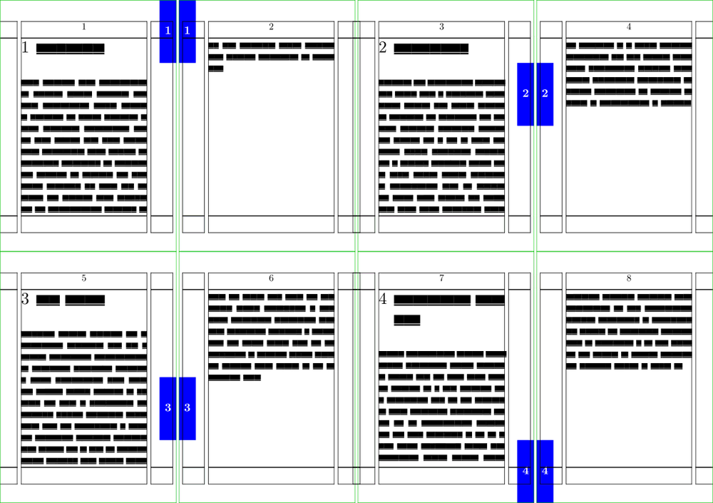
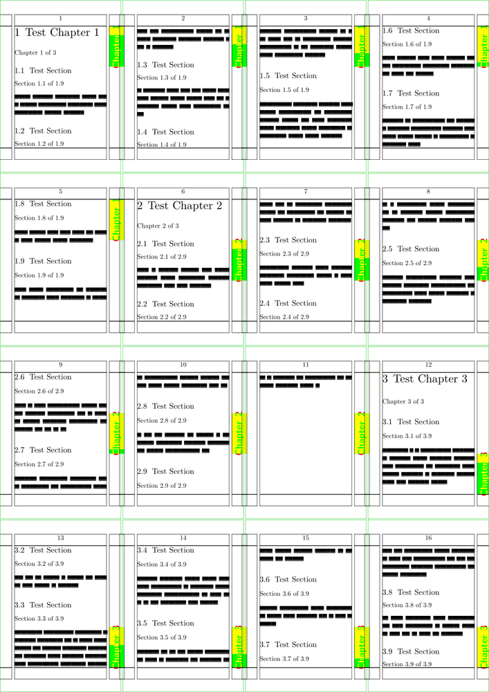

The following code is an example of how to draw a graphic on every page of a document. The graphic (a grey rectangle) appears in a different place for each chapter, and the chapter number appears in the rectangle as well. This is often called a thumb index - your thumb can flip the pages of a book while you watch the contents flash past...
-
% these first lines are just for wiki layout and visualisation \setuppapersize[A8][A5,landscape] \showframe \setuppaper[nx=4,ny=2] \setuparranging[XY] \usemodule[visual] \def\currentchapternumber {\somenamedheadnumber{chapter}{current}} \def\lastchapternumber {\somenamedheadnumber{chapter}{last}} \setuppagenumbering [alternative=doublesided] \setupbackgrounds [page] [background=thumbs] \defineoverlay [thumbs] [\setups{thumbs}] \newdimen\thumbheight \startsetups thumbs \ifnum \lastchapternumber > 0 \thumbheight=\dimexpr\paperheight/\lastchapternumber\relax \fi \vbox to \paperheight \bgroup \vskip \currentchapternumber \thumbheight \vskip -1 \thumbheight \doifoddpageelse\hfill\donothing \framed [background=color, backgroundcolor=blue, frame=off, foregroundcolor=white, height=\thumbheight, width=5mm] {\bfa \currentchapternumber} \doifoddpageelse\donothing\hfill \vss \egroup \stopsetups \starttext \dorecurse{4} {\chapter{\fakewords{1}{5}} \fakewords{50}{100}} \stoptext
- 
Another Example
An example (MkIV) for using Metapost to create thumb indices for chapters.
-
% these first lines are just for wiki layout and visualisation \setuppapersize[A8][A4] \showframe \setuppaper[nx=4,ny=4] \setuparranging[XY] \usemodule[visual] \setuplayout [width=middle, % margin=\dimexpr\backspace-\margindistance\relax location=middle] \definecolor[chap_frame][g=1,t=1,a=12] \definecolor[sect_frame][b=1,t=1,a=12] \definecolor[textcolor] [r=1,t=1,a=12] \startuseMPgraphic{chapter thumb} path chap_frame, sect_frame ; pair pos,a,b ; picture text ; if \somenamedheadnumber{chapter}{current} > 0 : curr_chap := \somenamedheadnumber{chapter}{current} ; else : curr_chap := 1 ; fi; if \somenamedheadnumber{chapter}{last} > 0 : last_chap := \somenamedheadnumber{chapter}{last} ; else : last_chap := 1 ; fi; if \somenamedheadnumber{section}{current} > 0 : curr_sect := \somenamedheadnumber{section}{current} ; else: curr_sect := 1 ; fi; if \somenamedheadnumber{section}{last} > 0 : last_sect := \somenamedheadnumber{section}{last}; else: last_sect := 1; fi; skip := TextHeight * (curr_chap-1)/last_chap ; height := TextHeight/last_chap ; sskip := height*curr_sect/last_sect ; text := textext("\ssbfb\textcolor Chapter\enspace\getmarking[chapternumber]"); StartPage ; chap_frame := fullsquare xyscaled(RightMarginWidth,height) ; a := ulcorner chap_frame ; b := urcorner chap_frame ; sect_frame := a--b--(xpart b,ypart b-sskip)--(xpart a,ypart a-sskip)--cycle; pos := urcorner Field[Text][RightMarginSeparator] - ulcorner chap_frame - (0,skip); fill chap_frame shifted pos withcolor \MPcolor{chap_frame}; unfill sect_frame shifted pos withcolor white ; fill sect_frame shifted pos withcolor \MPcolor{sect_frame}; draw text rotated 90 shifted pos ; StopPage ; \stopuseMPgraphic \defineoverlay[chapter thumb][\useMPgraphic{chapter thumb}] \setupbackgrounds[page][background=chapter thumb] \starttext \showframe \dorecurse{3}{\chapter{Test Chapter #1} Chapter \someheadnumber[chapter][current] of \someheadnumber[chapter][last] \dorecurse{9}{\section{Test Section} Section \someheadnumber[section][current] of \someheadnumber[section][last] \blank \fakewords{10}{20} \par } } \stoptext
- 